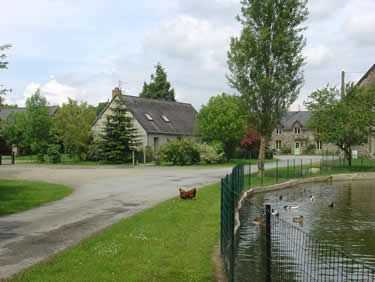
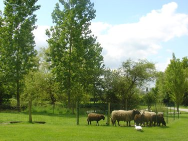
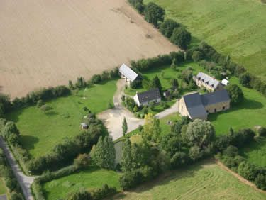

Chambre n°5
1 à 2 personnes · rez-de-chaussée
- Entrée indépendante
- 1 lit double
- Salle d'eau privative
- Kitchenette
- TV écran plat · Wi-Fi
Chambres d'hôtes · Gîte rural · Laval (53)
calme et confort
En pleine campagne à la périphérie de Laval. Laurence et Patrick vous accueillent dans leur ferme rénovée — à la nuit, à la semaine, ou pour vos fêtes de famille.



Bienvenue
« Laurence et Patrick vous accueillent dans leur ferme rénovée en chambres d'hôtes et en gîte rural avec salle de réception. Situés dans un cadre exceptionnel en pleine campagne et aux portes de la ville, vous y trouverez calme et confort. »
Vous pourrez flâner et visiter le centre historique de Laval, ville d'Art et d'Histoire, traversée par la rivière la Mayenne — et rejoindre à deux pas le chemin de halage.
Chambres d'hôtes
[Tarifs à confirmer] Taxe de séjour 0,60 € par personne et par nuit · Wi-Fi gratuit · un lit supplémentaire peut être ajouté dans chaque chambre.
1 à 2 personnes · rez-de-chaussée
1 à 3 personnes (+ lit bébé) · à l'étage
1 à 3 personnes · à l'étage
Gîte rural & salle de réception
Le gîte vous accueille pour vos soirées d'anniversaire, de mariage, vos évènements familiaux, réunions d'entreprise ou toutes autres réceptions — dans un environnement calme et agréable, à la périphérie de l'agglomération lavaloise.
600 € le week-end
du samedi matin au dimanche soir
Journée supplémentaire : 100 € [À confirmer]
D'autres formules ? Demandez un devis.
Taxe de séjour : 0,60 € par personne et par nuit.
Demander une date pour le gîteCavaliers bienvenus
Vous voyagez avec vos chevaux ? Pré, carrière et boxes sont à votre disposition.
Tarif : [À confirmer]
Réservation en direct
Indiquez vos dates : Laurence vous répond directement, sans intermédiaire ni commission.
Ouvert toute l'année.
Situation & accès
À 5 min du centre-ville de Laval, de l'aéroport Beausoleil et de la piste de karting, à proximité du chemin de halage. Entre la Rocade Est (N162) et l'avenue de Chanzy (D57).
GPS : saisir « Laval » puis « faluère » et choisir « Grande faluère » ou « Gîte des faluères ».
Coordonnées : 48° 03′ 53″ N – 0° 44′ 16″ O
À découvrir : Laval Tourisme · Lactopôle
4,1/5 sur Google · 74 avis [À confirmer]
Vous avez séjourné aux Faluères ? Vos avis aident d'autres voyageurs à nous trouver. [Lien vers la fiche Google à ajouter]